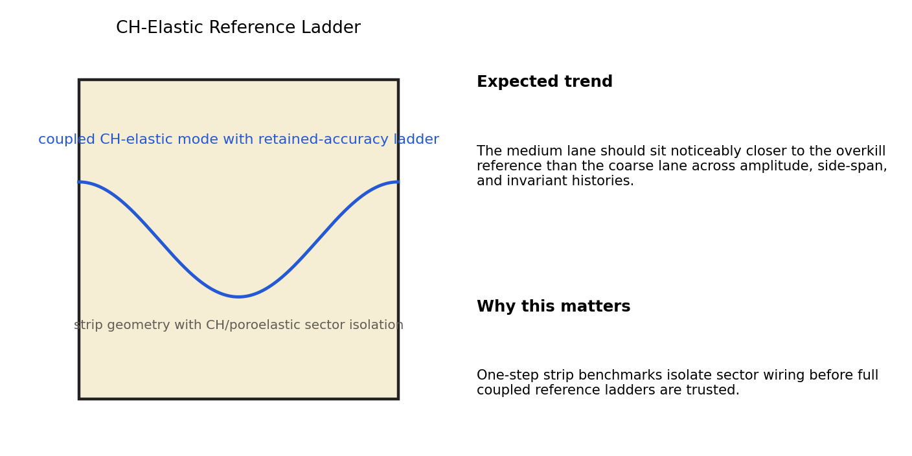
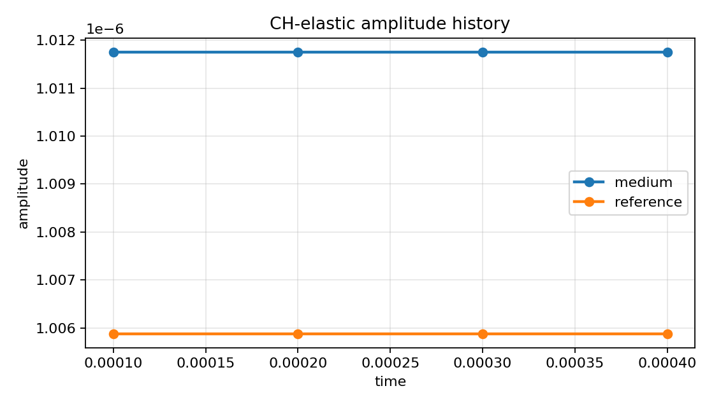
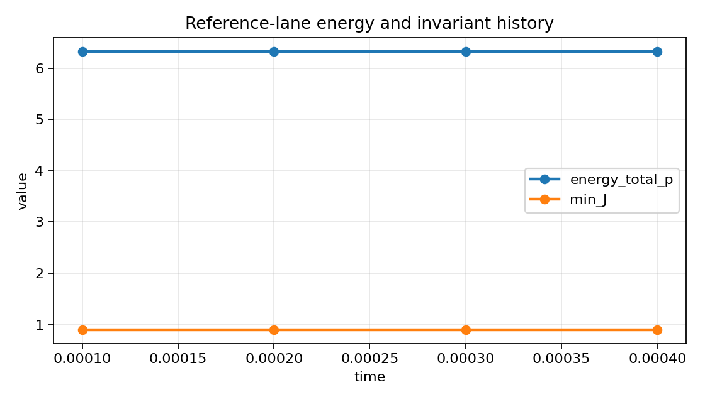
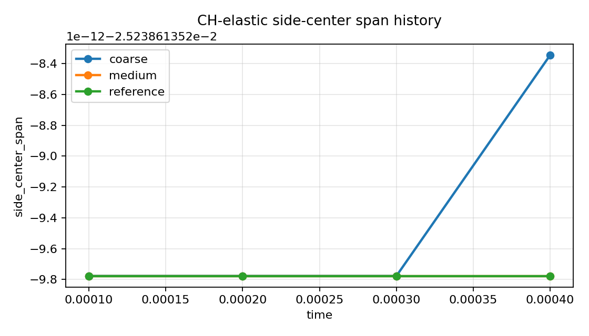
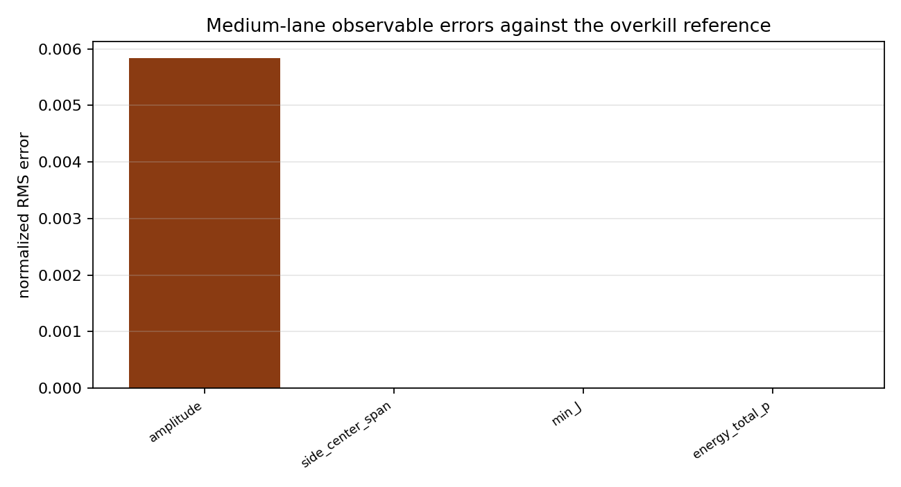

Benchmark
CH-Elastic Reference Ladder
Family: reference-ladders
Coarse and medium retained-accuracy ladder against an overkill CH-elastic reference.
Target and Success Criteria
target_kind: Overkill reference
Tier: full
Unknowns active: pf, u
Frozen terms: pressure, storage, hydraulic transport
Comparison grammar: Achieved / Target
Tickets: VV-010b
What This Benchmark Verifies
This ladder checks retained coupled CH-elastic accuracy against a same-equations overkill reference on a strip-mode benchmark.
Benchmark Narrative
Narrative
Physical Problem
A small-amplitude strip mode is advanced in the coupled CH-elastic system at coarse, medium, and overkill-reference fidelities.
Narrative
Target Definition
The target is the overkill reference lane. The expected trend is retained improvement: the medium lane should be visibly closer to the reference than the coarse lane across amplitude, side-center span, and invariant diagnostics.
Narrative
Why These Observables
The setup schematic explains the ladder, the history plots show raw amplitude and span samples from the runs, the energy plot shows a reference-lane state diagnostic, and the error bar chart summarizes the extracted observable errors against the overkill target.
Narrative
How To Read The Error
This page should be read like an accuracy ladder, not a stability page: improvement of medium over coarse is the key result, even when both lanes look qualitatively similar.
Narrative
Reference Qualification
All lanes solve the same public equations and geometry. The reference lane only tightens resolution and time-step choices, so differences can be interpreted as discretization drift.
Narrative
Limitations
This ladder is strip-mode specific and intentionally low amplitude. It does not replace the larger canonical-disk CHB reference ladders.
medium_amplitude
pass
medium_side_center_span
pass
medium_min_J
pass
medium_energy_total_p
pass
Setup Schematic
figure

Setup schematic for the CH-elastic retained-accuracy ladder.
plots/setup-schematic.png
Raw Run Evidence
Extracted Observables
plot

Raw amplitude history for the medium lane against the overkill reference.
plots/amplitude-history.png
plot

Reference-lane energy and invariant history.
plots/reference-energy-history.png
Target Comparison
plot

Side-center displacement span history across the ladder lanes.
plots/side-center-span-history.png
Error Summary
plot

Observable errors for the medium lane against the overkill reference.
plots/medium-observable-errors.png
Scalar Summary
| Label | Value | Unit | Comparison | Threshold | Severity |
|---|---|---|---|---|---|
| medium_amplitude | 0.00584202 | 0 | 0 | pass | |
| medium_side_center_span | 0 | 0 | 0 | pass | |
| medium_min_J | 4.33101e-10 | 0 | 0 | pass | |
| medium_energy_total_p | 2.02165e-14 | 0 | 0 | pass |
Evidence Table
| Label | Metric | Comparison | Threshold | Severity |
|---|---|---|---|---|
| medium_error_count | observables | 4 | >= 1 | pass |
Series Overview
| Plot | Group | Observable | Case | Level | Target |
|---|---|---|---|---|---|
| coarse_amplitude | reference_target | amplitude | coarse | coarse | overkill reference |
| coarse_side_center_span | reference_target | side center span | coarse | coarse | overkill reference |
| coarse_min_J | reference_target | min J | coarse | coarse | overkill reference |
| coarse_energy_total_p | reference_target | energy total p | coarse | coarse | overkill reference |
| medium_amplitude | reference_target | amplitude | medium | medium | overkill reference |
| medium_side_center_span | reference_target | side center span | medium | medium | overkill reference |
| medium_min_J | reference_target | min J | medium | medium | overkill reference |
| medium_energy_total_p | reference_target | energy total p | medium | medium | overkill reference |
Cases
Case
coarse
Coarse lane in the CH-elastic retained-accuracy ladder.
Case
medium
Medium lane in the CH-elastic retained-accuracy ladder.
Case
reference
Reference lane in the CH-elastic retained-accuracy ladder.